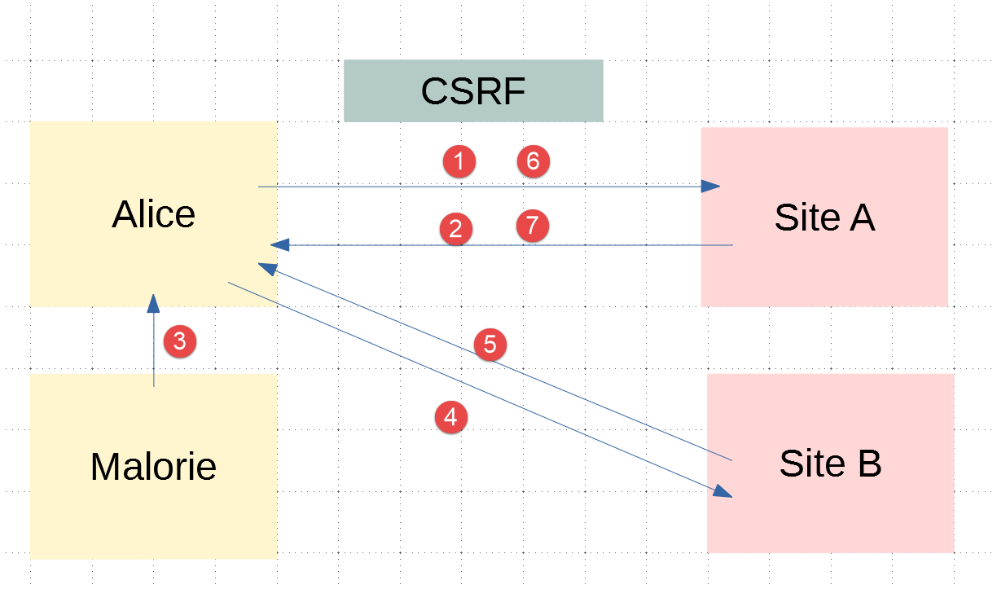
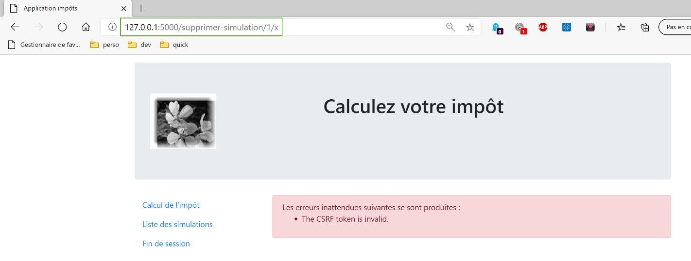

34. تمرين تطبيقي: الإصدار 14

يتم الحصول على المجلد [http-servers/09] الخاص بالإصدار 14 عن طريق نسخ المجلد [http-servers/08] الخاص بالإصدار 13.
34.1. مقدمة
CSRF (تزوير الطلبات عبر المواقع) هي تقنية لسرقة الجلسة. وهي موضحة على النحو التالي في ويكيبيديا (https://fr.wikipedia.org/wiki/Cross-site_request_forgery):
- تمكنت مالوري من معرفة الرابط الذي يسمح بحذف الرسالة المعنية.
- ترسل مالوري رسالة إلى أليس تحتوي على صورة زائفة لعرضها (وهي في الواقع برنامج نصي). الرابط URL الخاص بالصورة هو الرابط المؤدي إلى البرنامج النصي الذي يسمح بحذف الرسالة المطلوبة.
- يجب أن تكون لدى أليس جلسة عمل مفتوحة في متصفحها للموقع الذي تستهدفه مالوري. وهذا شرط ضروري لنجاح الهجوم بشكل خفي دون الحاجة إلى طلب مصادقة من شأنه تنبيه أليس. ويجب أن تتمتع هذه الجلسة بالصلاحيات المطلوبة لتنفيذ الطلب التدميري الذي أرسلته مالوري. ليس من الضروري أن تكون إحدى علامات تبويب المتصفح مفتوحة على الموقع المستهدف، ولا حتى أن يكون المتصفح قيد التشغيل. يكفي أن تكون الجلسة نشطة.
- تقرأ أليس رسالة مالوري، ويستخدم متصفحها الجلسة المفتوحة الخاصة بأليس ولا يطلب مصادقة تفاعلية. ويحاول المتصفح استرداد محتوى الصورة. وعند قيامه بذلك، ينقر المتصفح على الرابط ويحذف الرسالة، ويسترد صفحة ويب نصية كمحتوى للصورة. ونظرًا لعدم تعرفه على نوع الصورة المرتبطة، فإنه لا يعرض أي صورة، ولا تدرك أليس أن مالوري قد جعلتها تحذف رسالة رغماً عنها.
حتى مع شرحها بهذه الطريقة، تظل تقنية CSRF صعبة الفهم. فلنرسم مخططًا توضيحيًا:

- في [1-2]، تتواصل أليس مع المنتدى (الموقع أ). يحافظ هذا المنتدى على جلسة عمل لكل مستخدم. يقوم متصفح أليس بتخزين ملف تعريف الارتباط الخاص بجلسة العمل محليًّا وإعادة إرساله في كل مرة يوجه فيها طلبًا جديدًا إلى الموقع أ؛
- في [3]، ترسل مالوري رسالة إلى أليس. تقرأ أليس الرسالة عبر متصفحها. الرسالة المقروءة بتنسيق HTML وتحتوي على رابط لصورة من الموقع ب. في الواقع، هذا الرابط هو رابط لبرنامج جافا سكريبت يتم تنفيذه بمجرد وصوله إلى متصفح أليس؛
- ثم يقوم هذا البرنامج النصي جافا سكريبت بإرسال طلب إلى الموقع «أ». عندئذٍ يرسل متصفح أليس الطلب تلقائيًا مع ملف تعريف الارتباط الخاص بالجلسة المخزّن محليًّا. وهنا تحدث الهجمة: فقد نجحت مالوري في إرسال طلب إلى الموقع «أ» باستخدام صلاحيات (جلسة) أليس. وبعد ذلك، بغض النظر عما يحدث، تكون الهجمة قد وقعت بالفعل؛
وللتصدي لهذا النوع من الهجمات، يمكن للموقع «أ» اتباع الإجراء التالي:
- في كل تبادل [1-2] مع أليس، يرسل الموقع «أ» مفتاحًا، يُسمى فيما بعد «توكين» (token) CSRF، والذي يجب على أليس إعادته إليه عند الطلب التالي. وبالتالي، يجب على أليس إرسال معلومتين مع كل طلب:
- ملف تعريف الارتباط الخاص بالجلسة؛
- الرمز CSRF الذي تلقتْه في الرد على آخر طلب لها إلى الموقع «أ»؛
وهنا تكمن الحماية: إذا كان المتصفح يعيد إرسال ملف تعريف الارتباط الخاص بالجلسة تلقائيًا إلى الموقع A، فإنه لا يفعل ذلك مع الرمز المميز CSRF. ولهذا السبب، سيتم رفض التبادل 6-7 الذي يقوم به البرنامج النصي الهجومي لأن الطلب 6 لن يكون قد أرسل الرمز المميز CSRF؛
يمكن للموقع A أن يرسل إلى أليس الرمز المميز CSRF بطرق متنوعة لتطبيق HTML:
- يمكنه في كل طلب إرسال صفحة HTML حيث تحتوي جميع الروابط على الرمز المميز CSRF، على سبيل المثال [http://siteA/chemin/csrf_token]. عند الطلب التالي، عندما تنقر أليس على أحد هذه الروابط، لن يتعين على الموقع A سوى استرداد الرمز المميز CSRF من URL الخاص بالطلب والتحقق من صحته. وهذا ما سيتم فعله هنا؛
- وبالنسبة للصفحات التي تحتوي على نموذج، يمكن للموقع إرسال النموذج مع حقل مخفي يحتوي على الرمز المميز. عندئذٍ سيتم إرسال الرمز المميز تلقائيًا مع النموذج عندما تقوم أليس بتأكيد الصفحة. سيسترد الموقع «أ» الرمز المميز CSRF من نص الطلب (body)؛
- وهناك تقنيات أخرى يمكن استخدامها؛
34.2. التكوين

نقوم بإدخال قيمتين منطقيتين في تكوين [parameters] للتطبيق:
- [with_redissession]: عند تعيينها إلى True، يستخدم التطبيق جلسة Redis. وعند تعيينها إلى False، يستخدم التطبيق جلسة Flask عادية؛
- [with_csrftoken]: عند تعيينها إلى True، تحتوي URL الخاصة بالتطبيق على رمز CSRF؛
# مدة توقف الخيط بالثواني
"sleep_time": 0,
# خادم Redis
"with_redissession": True,
"redis": {
"host": "127.0.0.1",
"port": 6379
},
# رمز CSRF
"with_csrftoken": False,
34.3. تنفيذ CSRF
سنحرص على أنه عندما:
config['parameters']['with_csrftoken']
يساوي [True]، أن يرسل التطبيق إلى متصفح العميل صفحات ويب تحتوي روابطها على الرمز المميز CSRF.
34.3.1. الوحدة النمطية [flask_wtf]
سيتم تنفيذ الرمز المميز CSRF باستخدام الوحدة النمطية [flask_wtf] التي نقوم بتثبيتها في محطة طرفية PyCharm:
(venv) C:\Data\st-2020\dev\python\cours-2020\python3-flask-2020\packages>pip install flask_wtf
Collecting flask_wtf
…
34.3.2. قوالب العرض
نقوم بإدخال فئة جديدة في القوالب:

الفئة [AbstractBaseModelForView] هي كما يلي:
from abc import abstractmethod
from flask import Request
from flask_wtf.csrf import generate_csrf
from werkzeug.local import LocalProxy
from InterfaceModelForView import InterfaceModelForView
class AbstractBaseModelForView(InterfaceModelForView):
@abstractmethod
def get_model_for_view(self, request: Request, session: LocalProxy, config: dict, résultat: dict) -> dict:
pass
def get_csrftoken(self, config: dict):
# csrf_token
if config['parameters']['with_csrftoken']:
return f"/{generate_csrf()}"
else:
return ""
- السطر 9: الفئة [AbstractBaseModelForView] تُنفذ الواجهة [InterfaceModelForView] التي تنفذها فئات النماذج؛
- الأسطر 11-13: الطريقة [get_model_for_view] غير مُنفَّذة؛
- الأسطر 15-20: تُنشئ الطريقة [get_csrftoken] الرمز المميز CSRF إذا تم تكوين التطبيق لاستخدامها. حسب الحالة، تُرجع الدالة رمزًا مميزًا مسبوقًا بعلامة /، وإلا تُرجع سلسلة فارغة. تتميز الدالة [generate_csrf] بأنها تولد دائمًا نفس القيمة لطلب عميل معين. تتضمن معالجة الطلب تنفيذ دوال مختلفة. ويؤدي استخدام [generate_csrf] في هذه الدوال إلى توليد نفس القيمة دائمًا. أما عند الطلب التالي، فيتم إنشاء رمز جديد هو CSRF؛
وستتضمن جميع قوالب M الخاصة بالعرض V الرمز CSRF بالطريقة التالية:
class ModelForAuthentificationView(AbstractBaseModelForView):
def get_model_for_view(self, request: Request, session: LocalProxy, config: dict, résultat: dict) -> dict:
# تتم تغليف بيانات الصفحة في القالب
modèle = {}
…
# رمز CSRF
modèle['csrf_token'] = super().get_csrftoken(config)
# يتم عرض القالب
return modèle
- توسع كل فئة نموذج الفئة الأساسية [AbstractBaseModelForView]؛
- السطر 8: يُطلب الرمز CSRF من الفئة الأم. ونحصل إما على سلسلة فارغة، أو على سلسلة من النوع [/Ijk4NjQ2ZDdjZjI0ZDJiYTVjZTZjYmFhZGNjMjE3Y2U5M2I3ODI0NzYi.Xy5Okg.n-kSR_nslkndfT7AFVy2UDtdb8c]؛
34.3.3. الصفحات
بناءً على ما رأيناه للتو، ستحتوي جميع الصفحات V في نموذجها M على الرمز CSRF. وبالتالي، سيكون بإمكانها استخدامه في الروابط التي تحتوي عليها. لنأخذ بعض الأمثلة:
جزء المصادقة [v_authentification.html]
<!-- نموذج HTML - يتم إرسال قيمه باستخدام الإجراء [authentifier-utilisateur] -->
<form method="post" action="/authentifier-utilisateur{{modèle.csrf_token}}">
<!-- العنوان -->
<div class="alert alert-primary" role="alert">
<h4>Veuillez vous authentifier</h4>
</div>
…
</form>
- السطر 2: وفقًا لما سبق، فإن الرمز URL الخاص بالسمة [action] سيكون:
[/authentifier-utilisateur/Ijk4NjQ2ZDdjZjI0ZDJiYTVjZTZjYmFhZGNjMjE3Y2U5M2I3ODI0NzYi.Xy5Okg.n-kSR_nslkndfT7AFVy2UDtdb8c]
أو
حسب ما إذا كان التطبيق قد تم تهيئته لاستخدام الرموز المميزة CSRF أم لا؛
جزء حساب الضريبة [v-calcul-impot.html]
<!-- نموذج HTML الذي تم إرساله -->
<form method="post" action="/calculer-impot{{modèle.csrf_token}}">
<!-- رسالة مكونة من 12 عمودًا على خلفية زرقاء -->
<div class="col-md-12">
<div class="alert alert-primary" role="alert">
<h4>Remplissez le formulaire ci-dessous puis validez-le</h4>
</div>
</div>
…
</form>
جزء المحاكاة [v-liste-simulations.html]
{% if modèle.simulations is undefined or modèle.simulations|length==0 %}
<!-- رسالة على خلفية زرقاء -->
<div class="alert alert-primary" role="alert">
<h4>Votre liste de simulations est vide</h4>
</div>
{% endif %}
{% if modèle.simulations is defined and modèle.simulations|length!=0 %}
<!-- رسالة على خلفية زرقاء -->
<div class="alert alert-primary" role="alert">
<h4>Liste de vos simulations</h4>
</div>
<!-- جدول المحاكاة -->
<table class="table table-sm table-hover table-striped">
…
<!-- نص الجدول (البيانات المعروضة) -->
<tbody>
<!-- يتم عرض كل محاكاة بالتنقل عبر جدول المحاكاة -->
{% for simulation in modèle.simulations %}
<!-- عرض سطر من الجدول مكون من 6 أعمدة - العلامة <tr> -->
<!-- العمود 1: عنوان الصف (رقم المحاكاة) - العلامة <th scope='row' -->
<!-- العمود 2: قيمة المعلمة [marié] - العلامة <td> -->
<!-- العمود 3: قيمة المعلمة [enfants] - العلامة <td> -->
<!-- العمود 4: قيمة المعلمة [salaire] - العلامة <td> -->
<!-- العمود 5: قيمة المعلمة [impôt] (للضريبة) - العلامة <td> -->
<!-- العمود 6: قيمة المعلمة [surcôte] - العلامة <td> -->
<!-- العمود 7: قيمة المعلمة [décôte] - العلامة <td> -->
<!-- العمود 8: قيمة المعلمة [réduction] - العلامة <td> -->
<!-- العمود 9: قيمة المعلمة [taux] (للضريبة) - العلامة <td> -->
<!-- العمود 10: رابط حذف المحاكاة - العلامة <td> -->
<tr>
<th scope="row">{{simulation.id}}</th>
<td>{{simulation.marié}}</td>
<td>{{simulation.enfants}}</td>
<td>{{simulation.salaire}}</td>
<td>{{simulation.impôt}}</td>
<td>{{simulation.surcôte}}</td>
<td>{{simulation.décôte}}</td>
<td>{{simulation.réduction}}</td>
<td>{{simulation.taux}}</td>
<td><a href="/supprimer-simulation/{{simulation.id}}{{modèle.csrf_token}}">Supprimer</a></td>
</tr>
{% endfor %}
</tr>
</tbody>
</table>
{% endif %}
جزء القائمة [v-menu.html]
<!-- قائمة Bootstrap -->
<nav class="nav flex-column">
<!-- عرض قائمة بالروابط HTML -->
{% for optionMenu in modèle.optionsMenu %}
<a class="nav-link" href="{{optionMenu.url}}{{modèle.csrf_token}}">{{optionMenu.text}}</a>
{% endfor %}
</nav>
34.3.4. الطرق
يوجد الآن نوعان من الطرق، اعتمادًا على ما إذا كانت تستخدم رمزًا أم لا CSRF:

- [routes_without_csrftoken] هي الطرق التي لا تستخدم الرمز CSRF. وهي الطرق الموجودة في الإصدار السابق؛
- [routes_with_csrftoken] هي الطرق التي تستخدم الرمز CSRF.
في [routes_with_csrftoken]، أصبحت المسارات تحتوي الآن على معلمة إضافية، وهي الرمز المميز CSRF:
# وحدة التحكم الأمامية
def front_controller() -> tuple:
# يتم توجيه الطلب إلى وحدة التحكم الرئيسية
main_controller = config['mvc']['controllers']['main-controller']
return main_controller.execute(request, session, config)
@app.route('/', methods=['GET'])
def index() -> tuple:
# إعادة التوجيه إلى /init-session/html
return redirect(url_for("init_session", type_response="html", csrf_token=generate_csrf()), status.HTTP_302_FOUND)
# init-session
@app.route('/init-session/<string:type_response>/<string:csrf_token>', methods=['GET'])
def init_session(type_response: str, csrf_token: str) -> tuple:
# يتم تنفيذ وحدة التحكم المرتبطة بالإجراء
return front_controller()
# توثيق المستخدم
@app.route('/authentifier-utilisateur/<string:csrf_token>', methods=['POST'])
def authentifier_utilisateur(csrf_token: str) -> tuple:
# يتم تنفيذ وحدة التحكم المرتبطة بالإجراء
return front_controller()
# حساب الضريبة
@app.route('/calculer-impot/<string:csrf_token>', methods=['POST'])
def calculer_impot(csrf_token: str) -> tuple:
# يتم تنفيذ وحدة التحكم المرتبطة بالإجراء
return front_controller()
# حساب الضريبة على دفعات
@app.route('/calculer-impots/<string:csrf_token>', methods=['POST'])
def calculer_impots(csrf_token: str):
# يتم تنفيذ وحدة التحكم المرتبطة بالإجراء
return front_controller()
# إدراج المحاكاة
@app.route('/lister-simulations/<string:csrf_token>', methods=['GET'])
def lister_simulations(csrf_token: str) -> tuple:
# يتم تنفيذ وحدة التحكم المرتبطة بالإجراء
return front_controller()
# حذف-المحاكاة
@app.route('/supprimer-simulation/<int:numero>/<string:csrf_token>', methods=['GET'])
def supprimer_simulation(numero: int, csrf_token: str) -> tuple:
# يتم تنفيذ وحدة التحكم المرتبطة بالإجراء
return front_controller()
# نهاية الجلسة
@app.route('/fin-session/<string:csrf_token>', methods=['GET'])
def fin_session(csrf_token: str) -> tuple:
# يتم تنفيذ وحدة التحكم المرتبطة بالإجراء
return front_controller()
# عرض-حساب-الضريبة
@app.route('/afficher-calcul-impot/<string:csrf_token>', methods=['GET'])
def afficher_calcul_impot(csrf_token: str) -> tuple:
# يتم تنفيذ وحدة التحكم المرتبطة بالإجراء
return front_controller()
# الحصول على بيانات الإدارة
@app.route('/get-admindata/<string:csrf_token>', methods=['GET'])
def get_admindata(csrf_token: str) -> tuple:
# يتم تنفيذ وحدة التحكم المرتبطة بالإجراء
return front_controller()
أصبحت جميع المسارات تحتوي الآن على الرمز CSRF ضمن معلماتها، حتى المسار [/init-session]. وهذا يعني أنه لا يمكن للعميل تشغيل التطبيق عن طريق كتابة URL [/init-session/html] مباشرةً، لأنه سيفتقد الرمز CSRF. ويجب عليه الآن بالضرورة المرور عبر المسارين URL و[/] الواردين في الأسطر 7-10.
يتم اختيار المسارات في البرنامج النصي الرئيسي [main]:
…
# لم يعد الخيط الرئيسي بحاجة إلى مسجل السجلات
logger.close()
# في حالة حدوث خطأ، يتم إيقاف العملية
if erreur:
sys.exit(2)
# استيراد مسارات التطبيق الويب
if config['parameters']['with_csrftoken']:
import routes_with_csrftoken as routes
else:
import routes_without_csrftoken as routes
# تكوين المسارات
routes.config = config
# تشغيل تطبيق Flask
routes.execute(__name__)
- الأسطر 9-13: اختيار المسارات بناءً على ما إذا كان التطبيق يستخدم الرموز المميزة أم لا؛
34.3.5. وحدة التحكم [MainController]
عند كل طلب، يجب على الخادم التحقق من وجود الرمز المميز CSRF. سنقوم بذلك في وحدة التحكم الرئيسية [MainController] التي تمر عبرها جميع الطلبات:
from flask_wtf.csrf import generate_csrf, validate_csrf
…
# معالجة الطلب
try:
# التسجيل
logger = Logger(config['parameters']['logsFilename'])
…
# استرداد عناصر المسار
params = request.path.split('/')
# الإجراء هو العنصر الأول
action = params[1]
…
if config['parameters']['with_csrftoken']:
# csrf_token هو العنصر الأخير في المسار
csrf_token = params.pop()
# يتم التحقق من صحة الرمز المميز
# سيتم إثارة استثناء إذا لم يكن csrf_token هو الرمز المتوقع
validate_csrf(csrf_token)
…
except ValidationError as exception:
# رمز CSRF غير صالح
résultat = {"action": action, "état": 121, "réponse": [f"{exception}"]}
status_code = status.HTTP_400_BAD_REQUEST
except BaseException as exception:
# استثناءات أخرى (غير متوقعة)
résultat = {"action": action, "état": 131, "réponse": [f"{exception}"]}
status_code = status.HTTP_400_BAD_REQUEST
finally:
pass
# يتم إضافة csrf_token إلى النتيجة
résultat['csrf_token'] = generate_csrf()
# يتم تسجيل النتيجة المرسلة إلى العميل
log = f"[MainController] {résultat}\n"
logger.write(log)
- السطر 20: نسترد الرمز المميز CSRF من URL الخاص بالطلب من النوع [http://machine :port/chemin/action/param1/param2/…/csrf_token]. يظل رمز الجلسة هو العنصر الأخير في URL؛
- السطر 23: يتم التحقق من صحة الرمز المميز CSRF الذي تم استرداده من الرمز المميز URL باستخدام الرمز المميز CSRF الخاص بالجلسة. إذا لم تكن صالحة، فإن الدالة [validate_csrf] تطلق استثناءً من النوع [ValidationError] (السطر 27)؛
- السطر 41: يتم وضع الرمز المميز CSRF في النتيجة المرسلة إلى العميل. سيحتاج العملاء jSON و XML إلى هذا الرمز. في الواقع، لا يتلقى هؤلاء العملاء صفحات HTML تحتوي على الرمز CSRF في الروابط الموجودة داخل الصفحات. وبالتالي، سيتلقونه في النتيجة jSON أو XML المرسلة من الخادم؛
ملاحظة: لا تتحقق الدالة [validate_csrf] في السطر 23 من التطابق التام. يتم تخزين الرمز المميز CSRF في الجلسة باستخدام المفتاح [csrf_token]. تشير الاختبارات إلى أن الرمز المميز CSRF يعتبر صالحًا إذا تم إنشاؤه خلال الجلسة. لذا، إذا قمت يدويًّا، في الرابط URL المعروض في المتصفح، على سبيل المثال (/lister-simulations/xyz)، قمت باستبدال الرمز [xyz] بآخر [abc] تم استلامه مسبقًا خلال إجراء سابق، فإن الإجراء [/lister-simulations] سينجح؛
34.4. الاختبارات باستخدام متصفح
قم بما يلي:
- قم بتشغيل الخادم باستخدام المعلمة [with_csrftoken] إلى [True]؛
- اطلب URL [http://localhost:5000] باستخدام متصفح؛

- في [1]، الرمز المميز CSRF؛
لنقم ببعض العمليات حتى نحصل على قائمة بالمحاكاة:

الآن، لنكتب يدويًّا URL [http://localhost:5000/supprimer-simulation/1/x] لحذف المحاكاة ذات id=1. سنقوم عمدًا بإدخال رمز CSRF غير صحيح لنرى ما سيحدث. رد الخادم هو كما يلي:

ملاحظة 1: ليس من المؤكد أن الطريقة المستخدمة هنا ستكون كافية دائمًا للتصدي لهجمات CSRF. لنعد إلى مخطط الهجوم:
إذا كان البرنامج النصي جافا سكريبت الذي تم تنزيله في [5] قادرًا على قراءة سجل المتصفح الذي تستخدمه أليس، فسيكون قادراً على استرداد عمليات URL التي نفذها المتصفح، وعمليات URL مثل [/cible/csrf_token]. وبذلك سيتمكن من استرداد رمز جلسة العمل [csrf_token] وتنفيذ هجومه في [6-7]. ومع ذلك، لا يسمح المتصفح إلا باستغلال سجل نافذة المتصفح التي يتم فيها تشغيل البرنامج النصي. لذلك، إذا لم تستخدم أليس نفس النافذة للعمل مع الموقع A [1-2] وقراءة رسالة مالوري [3]، فلن يكون الهجوم CSRF ممكنًا.
34.5. عملاء وحدة التحكم
هناك طريقة أخرى لاختبار الإصدار 14 من التطبيق، وهي إعادة اختبارات الإصدار 12 وتكييفها مع الخادم الجديد.

يتم الحصول على المجلد [impots/http-clients/09] في البداية عن طريق نسخ المجلد [impots/http-clients/07]. ثم يتم تعديله.
لنعد إلى المسارات التي تقوم بتهيئة الجلسة:
# جذر التطبيق
@app.route('/', methods=['GET'])
def index() -> tuple:
# إعادة التوجيه إلى /init-session/html
return redirect(url_for("init_session", type_response="html", csrf_token=generate_csrf()), status.HTTP_302_FOUND)
# init-session-with-csrf-token
@app.route('/init-session/<string:type_response>/<string:csrf_token>', methods=['GET'])
def init_session(type_response: str, csrf_token: str) -> tuple:
# يتم تنفيذ وحدة التحكم المرتبطة بالإجراء
return front_controller()
لا يصلح أي من هذه المسارات لبدء جلسة jSON أو XML:
- الأسطر 2-5: المسار [/] يقوم بتهيئة جلسة HTML؛
- الأسطر 8-11: المسار [/init-session] يتطلب رمزًا CSRF غير معروف؛
قررنا إضافة مسار جديد إلى الخادم:
# init-session-without-csrftoken
@app.route('/init-session-without-csrftoken/<string:type_response>', methods=['GET'])
def init_session_without_csrftoken(type_response: str) -> tuple:
# إعادة التوجيه إلى /init-session/type_response
return redirect(url_for("init_session", type_response=type_response, csrf_token=generate_csrf()), status.HTTP_302_FOUND)
- السطر 2: المسار الجديد. لا يتطلب رمز CSRF. وبذلك عدنا إلى المسار [/init-session] من الإصدار السابق؛
- السطران 4-5: يتم إعادة توجيه العميل (jSON، XML، HTML) إلى المسار [/init-session] الذي يحتوي على الرمز المميز CSRF في معلماته؛
يمكن تجربة هذا المسار الجديد باستخدام متصفح:

رد الخادم (الذي تم تكوينه باستخدام [with_csrftoken=True]) هو كما يلي:

- في [1]، تمت إعادة توجيه الخادم إلى المسار [/init-session] باستخدام الرمز المميز CSRF الموجود في URL؛
- في [2]، توجد الرمز المميز CSRF في القاموس jSON الذي أرسله الخادم المرتبط بالمفتاح [csrf_token]؛
لنعد إلى كود العميل:

نقوم بتعديل التكوين [config] على النحو التالي:
config.update({
# ملف دافعي الضرائب
"taxpayersFilename": f"{script_dir}/../data/input/taxpayersdata.txt",
# ملف النتائج
"resultsFilename": f"{script_dir}/../data/output/résultats.json",
# ملف الأخطاء
"errorsFilename": f"{script_dir}/../data/output/errors.txt",
# ملف السجلات
"logsFilename": f"{script_dir}/../data/logs/logs.txt",
# خادم حساب الضريبة
"server": {
"urlServer": "http://127.0.0.1:5000",
"user": {
"login": "admin",
"password": "admin"
},
"url_services": {
"calculate-tax": "/calculer-impot",
"get-admindata": "/get-admindata",
"calculate-tax-in-bulk-mode": "/calculer-impots",
"init-session": "/init-session-without-csrftoken",
"end-session": "/fin-session",
"authenticate-user": "/authentifier-utilisateur",
"get-simulations": "/lister-simulations",
"delete-simulation": "/supprimer-simulation",
}
},
# وضع التصحيح
"debug": True,
# csrf_token
"with_csrftoken": True,
}
)
…
# مسار init-session
url_services = config['server']['url_services']
if config['with_csrftoken']:
url_services['init-session'] = '/init-session-without-csrftoken'
else:
url_services['init-session'] = '/init-session'
- السطر 31: سيُشير متغير منطقي إلى العميل ما إذا كان الخادم الذي يتصل به يعمل أم لا باستخدام الرموز المميزة CSRF؛
- الأسطر 37-40: نحدد خدمة URL للإجراء [init-session]:
- إذا كان الخادم يستخدم الرموز CSRF، فإن رمز الخدمة URL هو [/init-session-without-csrftoken]؛
- وإلا فإن رمز الخدمة URL هو [/init-session]؛
تم تقديم المسار [/init-session-without-csrftoken]. وهو يسمح للعميل jSON / XML ببدء جلسة مع الخادم دون امتلاك الرمز المميز CSRF. وسيجد هذا الرمز في استجابة الخادم.
ثم نقوم بتعديل الفئة [ImpôtsDaoWithHttpSession] التي تنفذ الطبقة [dao] الخاصة بالعميل:

# عمليات الاستيراد
import json
import requests
import xmltodict
from flask_api import status
from AbstractImpôtsDao import AbstractImpôtsDao
from AdminData import AdminData
from ImpôtsError import ImpôtsError
from InterfaceImpôtsDaoWithHttpSession import InterfaceImpôtsDaoWithHttpSession
from TaxPayer import TaxPayer
class ImpôtsDaoWithHttpSession(InterfaceImpôtsDaoWithHttpSession):
# المنشئ
def __init__(self, config: dict):
# تهيئة العنصر الأصلي
AbstractImpôtsDao.__init__(self, config)
# تخزين عناصر التكوين
# التكوين العام
self.__config = config
# الخادم
self.__config_server = config["server"]
# الخدمات
self.__config_services = config["server"]['url_services']
# وضع التصحيح
self.__debug = config["debug"]
# مسجل
self.__logger = None
# ملفات تعريف الارتباط
self.__cookies = None
# نوع الجلسة (json، xml)
self.__session_type = None
# الرمز المميز CSRF
self.__csrf_token = None
# مرحلة الطلب/الاستجابة
def get_response(self, method: str, url_service: str, data_value: dict = None, json_value=None):
# [method]: الطريقة HTTP أو GET أو POST
# [url_service]: خدمة URL
# [data]: معلمات POST بتنسيق x-www-form-urlencoded
# [json]: معلمات POST بتنسيق json
# [cookies]: ملفات تعريف الارتباط التي يجب تضمينها في الطلب
# يجب أن تكون هناك جلسة عمل XML أو JSON، وإلا فلن نتمكن من معالجة الاستجابة
if self.__session_type not in ['json', 'xml']:
raise ImpôtsError(73, "il n'y a pas de session valide en cours")
# يتم إضافة الرمز المميز CSRF إلى رمز الخدمة URL
if self.__csrf_token:
url_service = f"{url_service}/{self.__csrf_token}"
# تنفيذ الطلب
response = requests.request(method,
url_service,
data=data_value,
json=json_value,
cookies=self.__cookies,
allow_redirects=True)
# وضع التصحيح؟
if self.__debug:
# مسجل
if not self.__logger:
self.__logger = self.__config['logger']
# جاري التسجيل
self.__logger.write(f"{response.text}\n")
# النتيجة
if self.__session_type == "json":
résultat = json.loads(response.text)
else: # xml
résultat = xmltodict.parse(response.text[39:])['root']
# يتم استرداد ملفات تعريف الارتباط من الرد إن وجدت
if response.cookies:
self.__cookies = response.cookies
# يتم استرداد الرمز المميز CSRF
if self.__config['with_csrftoken']:
self.__csrf_token = résultat.get('csrf_token', None)
# رمز الحالة
status_code = response.status_code
# إذا كان رمز الحالة مختلفًا عن 200 OK
if status_code != status.HTTP_200_OK:
raise ImpôtsError(35, résultat['réponse'])
# نقوم بإرجاع النتيجة
return résultat['réponse']
def init_session(self, session_type: str):
# تسجيل نوع الجلسة
self.__session_type = session_type
# يتم حذف الرمز المميز CSRF من الاستدعاءات السابقة
self.__csrf_token = None
# يتم طلب URL الخاص بعملية init-session
url_service = f"{self.__config_server['urlServer']}{self.__config_services['init-session']}/{session_type}"
# تنفيذ الطلب
self.get_response("GET", url_service)
…
- الأسطر 38-92: تتم إدارة الرمز المميز CSRF بشكل أساسي في الطريقة [get_response]؛
- السطر 60: النقطة المهمة هي المعلمة [allow_redirects=True]. هذه هي قيمتها الافتراضية، لكننا حرصنا على إبرازها؛
عند التواجد في الوضع [with_csrftoken=True]:
- يبدأ العملاء تواصلهم مع الخادم باستدعاء المسار [/init-session_without_csftoken/type_response]؛
- يستجيب الخادم لهذا الطلب بإعادة التوجيه إلى المسار [/init-session/type_response/csrf_token]؛
- بسبب المعلمة [allow_redirects=True]، سيتم تنفيذ عملية إعادة التوجيه هذه بواسطة العميل [requests]؛
- سيتم العثور على الرمز المميز CSRF في النتيجة المستردة في السطرين 72 و74 مرتبطًا بالمفتاح [csrf_token]؛
عندما نكون في الوضع [with_csrftoken=False]:
- (تابع)
- يبدأ العملاء حوارهم مع الخادم باستدعاء المسار [/init-session /type_response]؛
- يستجيب الخادم لهذا الطلب بإعادة التوجيه إلى المسار [/init-session/type_response]؛
- بسبب المعلمة [allow_redirects=True]، سيتبع العميل هذا التوجيه إلى المسار [requests]؛
- لا يوجد رمز CSRF لاسترداده في السطرين 81-82. وبالتالي تظل الخاصية [self.__csrf_token] دائمًا على القيمة None (السطر 36)؛
- السطران 51-52: بالنسبة لجميع الطلبات التالية، يتم إضافة الرمز المميز CSRF، إن وجد، إلى المسار الأولي؛
- السطران 81-82: يتم تخزين الرمز الجديد الذي يولده الخادم عند كل طلب جديد من العميل محليًّا ليتم إرساله في السطر 52 إلى الطلب التالي؛
من ناحية أخرى، تتغير الطريقة [init_session] قليلاً:
def init_session(self, session_type: str):
# يتم تسجيل نوع الجلسة
self.__session_type = session_type
# يتم حذف الرمز المميز CSRF من الاستدعاءات السابقة
self.__csrf_token = None
# طلب URL الخاص بعملية init-session
url_service = f"{self.__config_server['urlServer']}{self.__config_services['init-session']}/{session_type}"
# تنفيذ الطلب
self.get_response("GET", url_service)
يجب أن نتذكر هنا أننا أنشأنا مسارًا [/init-session-without-csrftoken/<type-response>] لبدء الحوار بين العميل والخادم بدون الرمز المميز CSRF. ولكننا رأينا أن الطريقة [get_response]، التي يتم استدعاؤها في السطر 12 من الكود، تضيف بشكل منهجي في نهاية رمز الخدمة URL الرمز المميز CSRF المخزّن في [self.__csrf_token]. ولهذا السبب، يتم في السطر 6 من الكود حذف الرمز المميز CSRF في حال وجوده.
هذا كل شيء. لإجراء الاختبارات، سنقوم بتنفيذ:
- عملاء وحدة التحكم [main, main2, main3]؛
- فئات الاختبار [Test1HttpClientDaoWithSession] و [Test2HttpClientDaoWithSession]؛
مع تعيين معلمة التكوين [with_csrftoken] إلى True ثم إلى False بالتتابع.

فيما يلي مثال على السجلات التي تم الحصول عليها عند تشغيل العميل [main json] مع [with_csrftoken=True]:
2020-08-08 16:33:23.317903, MainThread : début du calcul de l'impôt des contribuables
2020-08-08 16:33:23.317903, Thread-1 : début du calcul de l'impôt des 4 contribuables
2020-08-08 16:33:23.317903, Thread-2 : début du calcul de l'impôt des 2 contribuables
2020-08-08 16:33:23.317903, Thread-3 : début du calcul de l'impôt des 4 contribuables
2020-08-08 16:33:23.317903, Thread-4 : début du calcul de l'impôt des 1 contribuables
2020-08-08 16:33:23.379221, Thread-2 : {"action": "init-session", "état": 700, "réponse": ["session démarrée avec le type de réponse json"], "csrf_token": "ImFiZmZkYjZmMzFkZDc2YWRjNWYwOGM0NTBmMGM4ODJjYzViOWI4NGEi.Xy63sw.H5L0--yWsvfaWvggrGw78z5VnN0"}
2020-08-08 16:33:23.381073, Thread-4 : {"action": "init-session", "état": 700, "réponse": ["session démarrée avec le type de réponse json"], "csrf_token": "ImY5YzQyMjlkYzcyYmM4YmZiMGI0NWY5MjE4MzIzNDExZjc0MGQ3MWQi.Xy63sw.q6olg7IP_g2ro_RBFRCX1BX90g8"}
2020-08-08 16:33:23.386982, Thread-3 : {"action": "init-session", "état": 700, "réponse": ["session démarrée avec le type de réponse json"], "csrf_token": "IjkxZGNlN2YyMmUxMjQ0M2Y0MTdjNDQ4ZmQ1MDMxZjkwNjBhNzAzZjMi.Xy63sw.-6buL11No3UJBlElpW4tX4B-lp0"}
2020-08-08 16:33:23.390269, Thread-1 : {"action": "init-session", "état": 700, "réponse": ["session démarrée avec le type de réponse json"], "csrf_token": "IjIxNmU4MDQyZDFmZmIyZDlmZjE4MzNlNDUzYzFjMGYxMWYxYzEwNGYi.Xy63sw.fgs6Cm2owsJf4NjTm7gKrVESabI"}
2020-08-08 16:33:23.413206, Thread-2 : {"action": "authentifier-utilisateur", "état": 200, "réponse": "Authentification réussie", "csrf_token": "ImFiZmZkYjZmMzFkZDc2YWRjNWYwOGM0NTBmMGM4ODJjYzViOWI4NGEi.Xy63sw.H5L0--yWsvfaWvggrGw78z5VnN0"}
2020-08-08 16:33:23.422877, Thread-2 : {"action": "calculer-impots", "état": 1500, "réponse": [{"marié": "non", "enfants": 3, "salaire": 100000, "impôt": 16782, "surcôte": 7176, "taux": 0.41, "décôte": 0, "réduction": 0, "id": 1}, {"marié": "oui", "enfants": 3, "salaire": 100000, "impôt": 9200, "surcôte": 2180, "taux": 0.3, "décôte": 0, "réduction": 0, "id": 2}], "csrf_token": "ImFiZmZkYjZmMzFkZDc2YWRjNWYwOGM0NTBmMGM4ODJjYzViOWI4NGEi.Xy63sw.H5L0--yWsvfaWvggrGw78z5VnN0"}
2020-08-08 16:33:23.428622, Thread-4 : {"action": "authentifier-utilisateur", "état": 200, "réponse": "Authentification réussie", "csrf_token": "ImY5YzQyMjlkYzcyYmM4YmZiMGI0NWY5MjE4MzIzNDExZjc0MGQ3MWQi.Xy63sw.q6olg7IP_g2ro_RBFRCX1BX90g8"}
2020-08-08 16:33:23.429127, Thread-3 : {"action": "authentifier-utilisateur", "état": 200, "réponse": "Authentification réussie", "csrf_token": "IjkxZGNlN2YyMmUxMjQ0M2Y0MTdjNDQ4ZmQ1MDMxZjkwNjBhNzAzZjMi.Xy63sw.-6buL11No3UJBlElpW4tX4B-lp0"}
2020-08-08 16:33:23.429127, Thread-1 : {"action": "authentifier-utilisateur", "état": 200, "réponse": "Authentification réussie", "csrf_token": "IjIxNmU4MDQyZDFmZmIyZDlmZjE4MzNlNDUzYzFjMGYxMWYxYzEwNGYi.Xy63sw.fgs6Cm2owsJf4NjTm7gKrVESabI"}
2020-08-08 16:33:23.429127, Thread-2 : {"action": "fin-session", "état": 400, "réponse": "session réinitialisée", "csrf_token": "IjU1YjlmZDA0OWRhNTJlODFmYjgyYjlhM2ExYWNhZmUzNTk2NjA5NGIi.Xy63sw.nyNSvkcG6iG0oIMBjtYPo8ySgdw"}
2020-08-08 16:33:23.438519, Thread-2 : fin du calcul de l'impôt des 2 contribuables
2020-08-08 16:33:23.443033, Thread-4 : {"action": "calculer-impots", "état": 1500, "réponse": [{"marié": "oui", "enfants": 3, "salaire": 200000, "impôt": 42842, "surcôte": 17283, "taux": 0.41, "décôte": 0, "réduction": 0, "id": 1}], "csrf_token": "ImY5YzQyMjlkYzcyYmM4YmZiMGI0NWY5MjE4MzIzNDExZjc0MGQ3MWQi.Xy63sw.q6olg7IP_g2ro_RBFRCX1BX90g8"}
2020-08-08 16:33:23.446510, Thread-3 : {"action": "calculer-impots", "état": 1500, "réponse": [{"marié": "oui", "enfants": 5, "salaire": 100000, "impôt": 4230, "surcôte": 0, "taux": 0.14, "décôte": 0, "réduction": 0, "id": 1}, {"marié": "non", "enfants": 0, "salaire": 100000, "impôt": 22986, "surcôte": 0, "taux": 0.41, "décôte": 0, "réduction": 0, "id": 2}, {"marié": "oui", "enfants": 2, "salaire": 30000, "impôt": 0, "surcôte": 0, "taux": 0.0, "décôte": 0, "réduction": 0, "id": 3}, {"marié": "non", "enfants": 0, "salaire": 200000, "impôt": 64210, "surcôte": 7498, "taux": 0.45, "décôte": 0, "réduction": 0, "id": 4}], "csrf_token": "IjkxZGNlN2YyMmUxMjQ0M2Y0MTdjNDQ4ZmQ1MDMxZjkwNjBhNzAzZjMi.Xy63sw.-6buL11No3UJBlElpW4tX4B-lp0"}
2020-08-08 16:33:23.453477, Thread-1 : {"action": "calculer-impots", "état": 1500, "réponse": [{"marié": "oui", "enfants": 2, "salaire": 55555, "impôt": 2814, "surcôte": 0, "taux": 0.14, "décôte": 0, "réduction": 0, "id": 1}, {"marié": "oui", "enfants": 2, "salaire": 50000, "impôt": 1384, "surcôte": 0, "taux": 0.14, "décôte": 384, "réduction": 347, "id": 2}, {"marié": "oui", "enfants": 3, "salaire": 50000, "impôt": 0, "surcôte": 0, "taux": 0.14, "décôte": 720, "réduction": 0, "id": 3}, {"marié": "non", "enfants": 2, "salaire": 100000, "impôt": 19884, "surcôte": 4480, "taux": 0.41, "décôte": 0, "réduction": 0, "id": 4}], "csrf_token": "IjIxNmU4MDQyZDFmZmIyZDlmZjE4MzNlNDUzYzFjMGYxMWYxYzEwNGYi.Xy63sw.fgs6Cm2owsJf4NjTm7gKrVESabI"}
2020-08-08 16:33:23.457912, Thread-4 : {"action": "fin-session", "état": 400, "réponse": "session réinitialisée", "csrf_token": "IjQ0ZDQxODgzN2M5NjRiYWI0NjA2MTk5YWFkNGFhMzY1M2IxNWMyNDIi.Xy63sw.mOa5MKXvJ-EXf_qEok-OqC5j_mg"}
2020-08-08 16:33:23.458442, Thread-4 : fin du calcul de l'impôt des 1 contribuables
2020-08-08 16:33:23.459045, Thread-3 : {"action": "fin-session", "état": 400, "réponse": "session réinitialisée", "csrf_token": "ImQ0NDZlYmViYjY1ZDUxYzJhMTNmM2JiZTRkMjBjZGJkYzE0OGVkYzMi.Xy63sw.fviTJz4zFDqVLlVlkrosT_JRPww"}
2020-08-08 16:33:23.459700, Thread-3 : fin du calcul de l'impôt des 4 contribuables
2020-08-08 16:33:23.460492, Thread-1 : {"action": "fin-session", "état": 400, "réponse": "session réinitialisée", "csrf_token": "Ijg3MjQ1NGUyYTUyOGEyNTdmZmNmYWZkMmU2OTgyMzUwNjI1YTlhZjIi.Xy63sw.I0xBl9Q8DzsuXPSgOdeARc_VKBA"}
2020-08-08 16:33:23.460492, Thread-1 : fin du calcul de l'impôt des 4 contribuables
2020-08-08 16:33:23.460492, MainThread : fin du calcul de l'impôt des contribuables
إذا نظرنا إلى الرموز المميزة CSRF التي تم استلامها تباعًا، نلاحظ أنها جميعًا مختلفة.